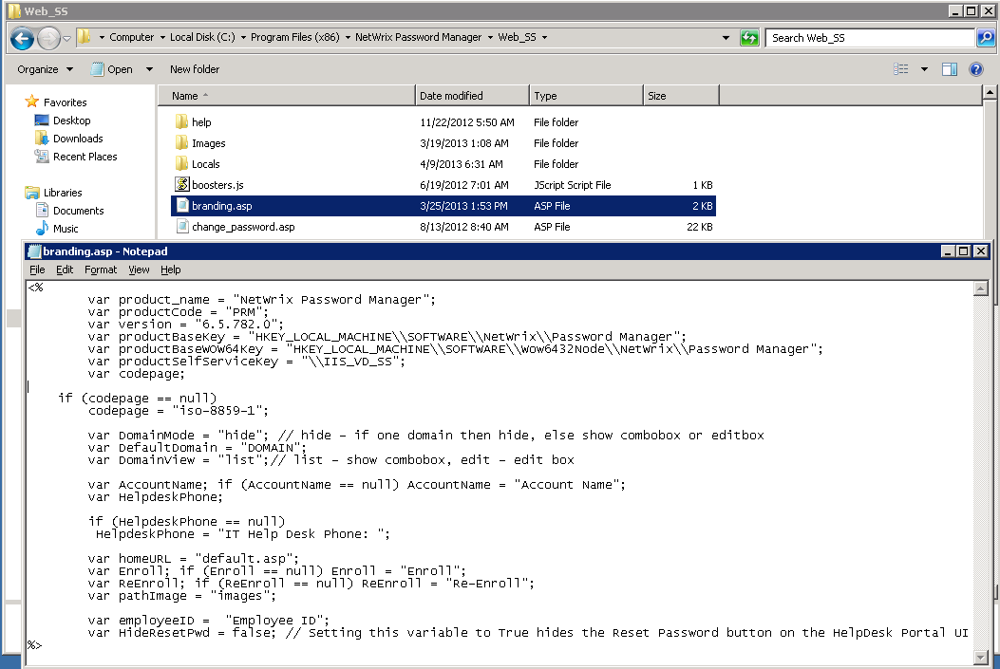

To hide the domain list, do the following:
1. Navigate to the Web_SS folder of the Password Manager installation directory. 2. Locate
the branding.asp file and edit it:

- Locate the DomainMode parameter and set it to 'hide'. This will hide the domain list from the Self-Service portal.
- Locate the DefaultDomain and enter the predefined domain name.